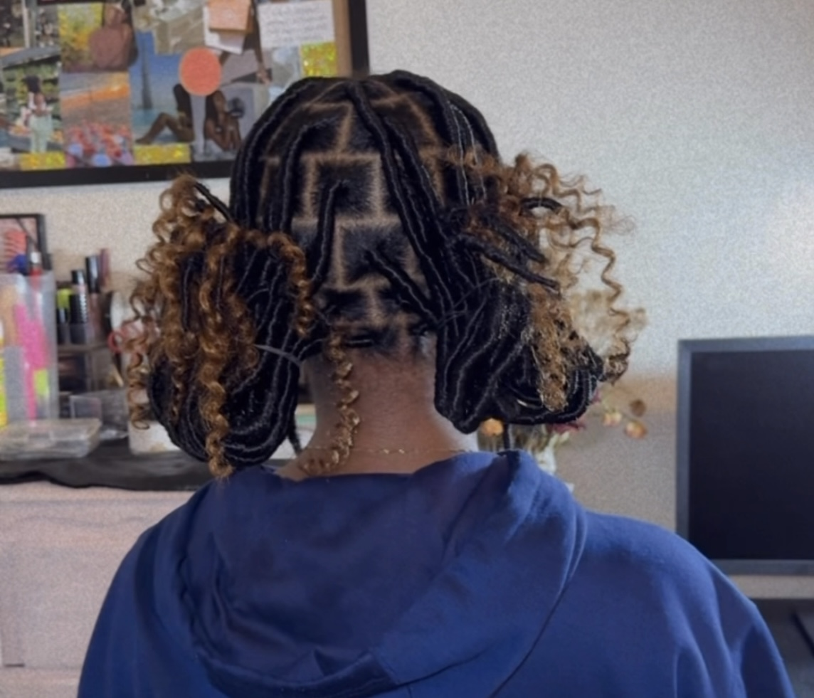

Faux Locs
Faux locs are a protective hairstyle designed to mimic the look of natural dreadlocks, but without the long-term commitment and permanency of actual locs. They involve wrapping hair extensions around sections of natural hair to create a loc-like appearance.
Here are some key features of faux locs:
-
Versatility: Here are several methods I use to install faux locs
- Wrapping Method:In this technique, synthetic hair is wrapped around individual braided sections of the hair, securing it to an artifical loc.
- Crotchet method: (Please refer to my crotchet page.)
- Invisible Locs:This style is created by using two-strand twists to give the illusion of locs with a fresh retwist.
- Natural-Looking Dreadlock Effect: Faux locs replicate the appearance of traditional dreadlocks. The extensions give the illusion of real locs, creating a similar aesthetic.
- Temporary and Versatile: Faux locs are a great option for people who want the look of locs without the long-term commitment.
- Protective Styling:Faux locs serve as a protective style, shielding natural hair from environmental stress, over-manipulation, and breakage. Since the natural hair is tucked away inside the locs, it's allowed to grow and retain moisture.
- Maintenance: Once installed, faux locs require minimal daily styling. However, it’s important to regularly moisturize the scalp and keep the hair clean to maintain the health of the natural hair underneath.
- Lightweight Options: Faux locs are not a low-tension style, and can sometimes be heavy, especially when installed long and thick. However newer techniques and extensions have made it possible to achieve lightweight versions that are more comfortable to wear over long periods.
Faux locs are a popular choice for anyone wanting to achieve the aesthetic of dreadlocks while protecting their natural hair and retaining styling versatility.